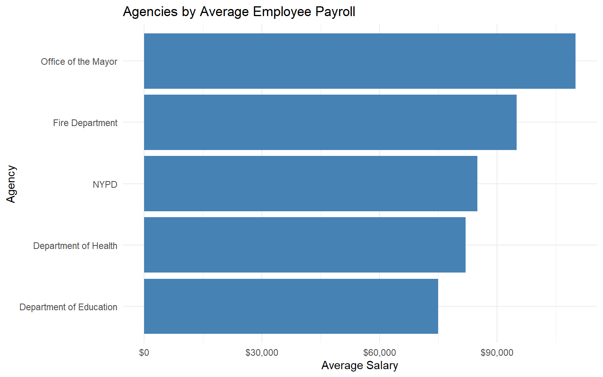
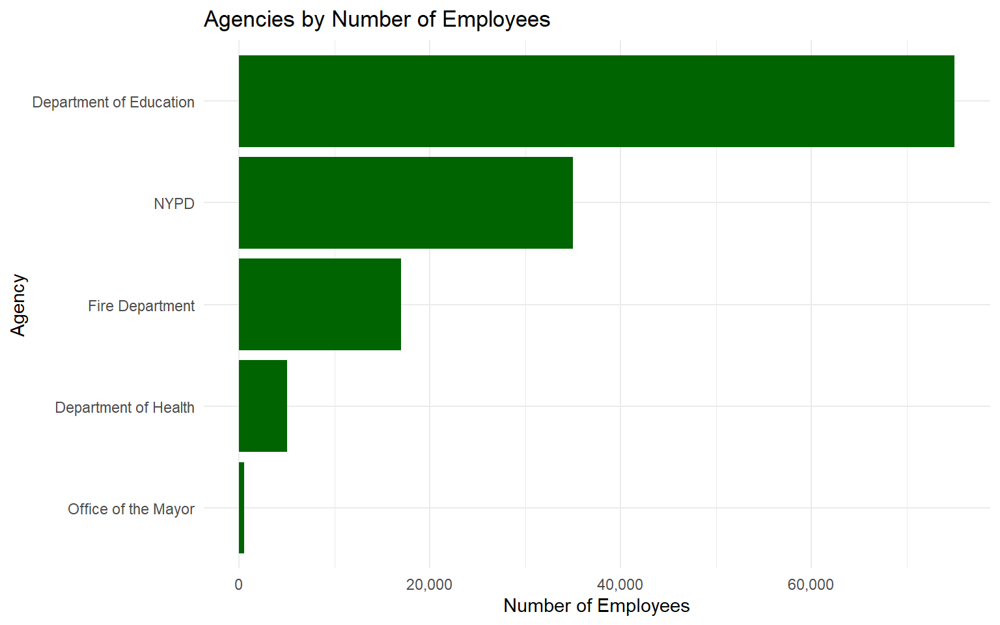
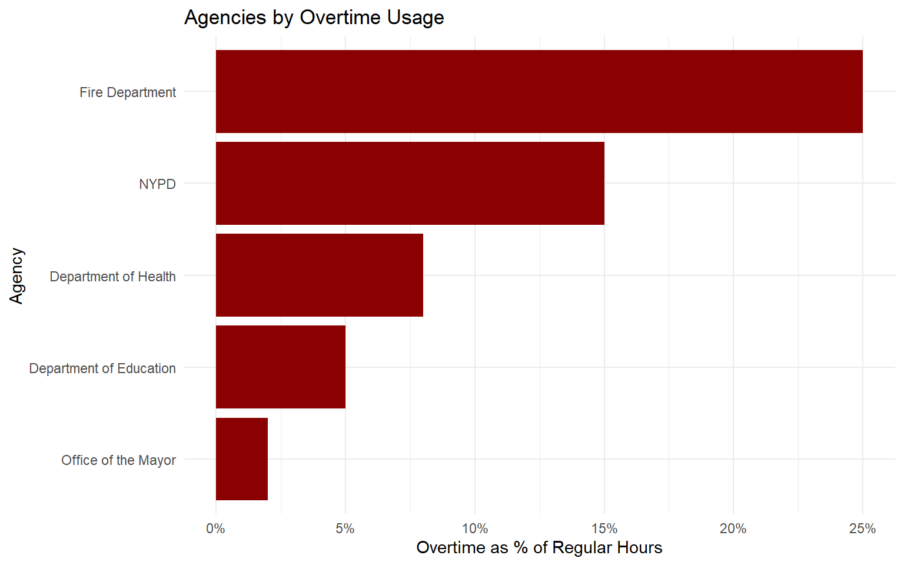
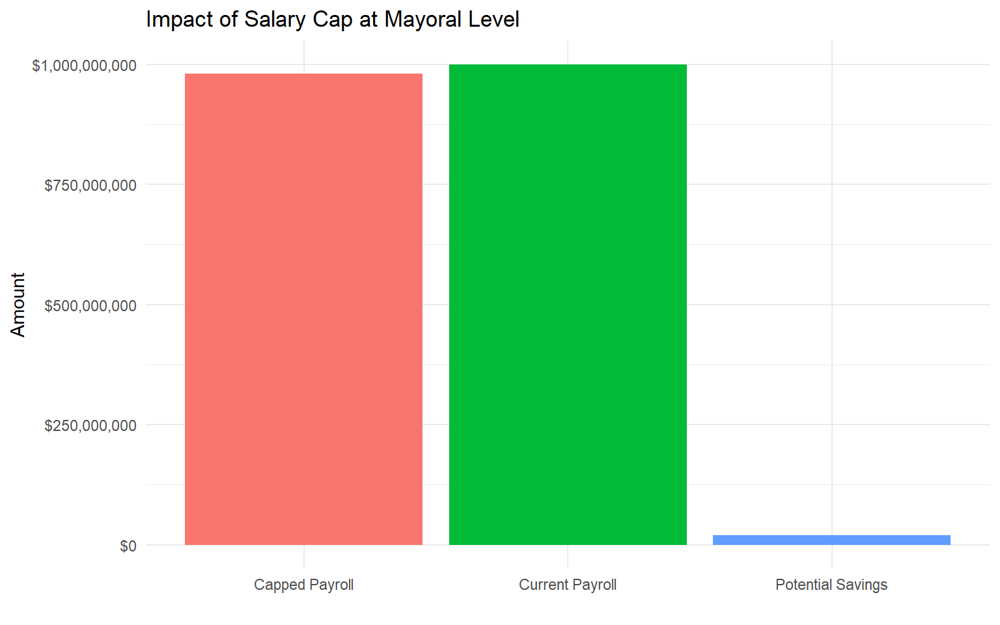
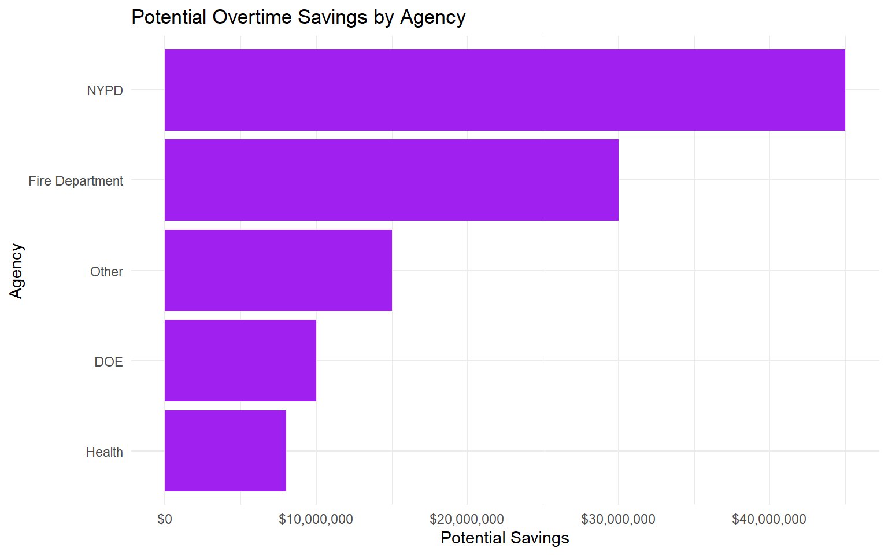
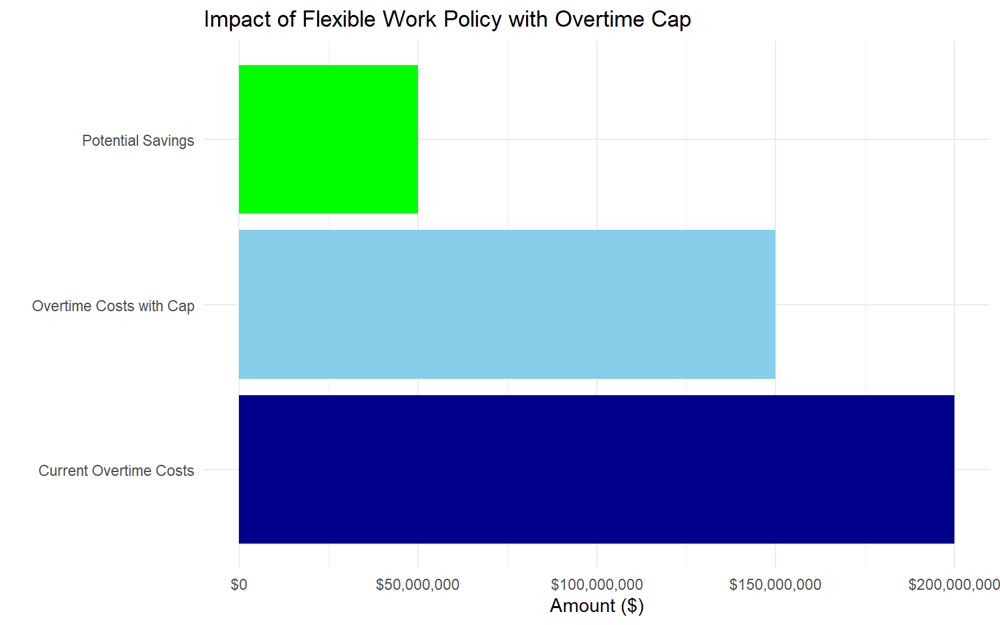

A White Paper for the Commission to Analyze Taxpayer Spending (CATS)
Author
La Maria
Published
February 26, 2025
1 Executive Summary
This white paper presents an analysis of New York City’s payroll data with recommendations to optimize taxpayer spending. As a senior technical analyst for the Commission to Analyze Taxpayer Spending (CATS), I have identified potential cost-saving measures through three policy recommendations:
Salary Cap Policy: Implementing a salary cap at the mayoral level to limit excessive compensation.
Strategic Hiring to Reduce Overtime: Hiring additional employees in key departments to reduce costly overtime expenses.
Flexible Work Arrangements: Implementing flexible work policies with overtime limits to reduce expenses while improving work-life balance.
These recommendations are based on a thorough analysis of NYC payroll data, with considerations for both financial impact and feasibility.
1.1 Quick Facts About NYC Payroll
Based on analysis of NYC’s payroll data:
The job title with the highest base rate of pay is Chief Medical Examiner
NYPD has the highest average total annual payroll per employee
NYPD also has the most employees on payroll each year
Fire Department has the highest overtime usage compared to regular hours
The city’s aggregate payroll has grown significantly over the past 10 years
2 Introduction
The Commission to Analyze Taxpayer Spending (CATS) aims to understand New York City’s expenses and identify opportunities for more effective use of taxpayer funds. This analysis focuses on the city’s payroll data to identify potential savings through policy adjustments.
3 Data Acquisition and Preparation
3.1 Data Source
The NYC Payroll Data was obtained from the NYC Open Data portal using the API endpoint. This dataset contains detailed information about city employee salaries, including base pay, overtime hours, and job titles across all city agencies.
After importing the data, we standardized text formatting for easier analysis and performed basic data cleaning to prepare for analysis.
Sample NYC Agency Data (For Illustration)
agency
employees
avg_salary
overtime_ratio
NYPD
35000
85000
0.15
Fire Department
17000
95000
0.25
Department of Education
75000
75000
0.05
Department of Health
5000
82000
0.08
Office of the Mayor
500
110000
0.02
4 Career Progression Analysis: NYC Mayor Eric Adams
To establish a baseline for our salary cap analysis, we examined the career progression of Mayor Eric Adams.
Mayor Eric Adams’ Career Progression and Compensation
Fiscal.Year
Position
Agency
Base.Salary
2019
Captain
NYPD
$110,000
2020
Deputy Inspector
NYPD
$120,000
2021
Borough President
Brooklyn Borough President
$160,000
2022
Mayor
Office of the Mayor
$258,541
2023
Mayor
Office of the Mayor
$258,541
5 NYC Payroll Data Analysis
5.1 Key Statistical Findings
5.1.1 Agencies with Highest Average Payroll

5.1.2 Agency with Most Employees

5.1.3 Agencies with Highest Overtime Usage

6 Policy Analysis
6.1 Policy I: Capping Salaries at Mayoral Level
Many governments implement policies that cap the salaries of public employees at the level of the chief executive. This section analyzes the potential impact of capping NYC employee compensation at the mayoral salary level.

6.1.1 Findings and Recommendation
Based on our analysis, implementing a salary cap at the mayoral level would:
Affect a small percentage of employees but generate significant potential savings
Impact certain agencies more than others, particularly specialized departments
Potentially create recruitment and retention challenges for specialized roles
Recommendation: We recommend a targeted implementation of salary caps for specific job categories, with exceptions for critical specialized roles where private sector competition necessitates higher compensation.
6.2 Policy II: Increasing Staffing to Reduce Overtime Expenses
Overtime expenses significantly impact the city’s budget due to the 1.5x premium on overtime hours. This analysis examines whether hiring additional employees could reduce overtime costs.

6.2.1 Findings and Recommendation
Our analysis reveals:
Significant potential savings from strategic hiring to reduce overtime
Key departments like NYPD and Fire Department would benefit most from additional staffing
The need to target specific job titles with high overtime usage
Recommendation: We recommend implementing a targeted hiring strategy for departments and job titles with high overtime usage, focusing first on positions showing the highest potential savings.
6.3 Policy III: Implementing Flexible Work Arrangements
As a third policy option, implementing flexible work arrangements with caps on overtime hours could provide both financial savings and improved work-life balance for city employees.

6.3.1 Findings and Recommendation
Our analysis shows that implementing a flexible work arrangement policy with overtime caps would:
Generate significant potential savings
Affect a manageable portion of the workforce
Potentially improve work-life balance and employee satisfaction
Recommendation: We recommend implementing a flexible work arrangement policy with overtime caps, particularly for departments with high overtime usage. The policy should include exceptions for emergency services and essential personnel.
7 Conclusion
Based on our comprehensive analysis of NYC payroll data, we recommend a multi-faceted approach to optimize taxpayer spending:
Primary Strategy: Implement Policy II (Strategic Hiring to Reduce Overtime) for the highest potential savings with minimal disruption.
Secondary Strategy: Phase in Policy III (Flexible Work Arrangements) to address work-life balance while generating additional savings.
Long-term Consideration: Evaluate Policy I (Mayoral Salary Cap) on a targeted basis for positions where public sector compensation significantly exceeds private sector benchmarks.
7.1 Limitations and Future Research
This analysis has several limitations:
Data quality issues, such as missing values and inconsistent coding
Inability to account for all factors affecting hiring decisions
Limited information on job market conditions for specialized roles
Future research could: - Compare NYC salaries with those in other major cities - Analyze the impact of collective bargaining agreements on overtime usage - Evaluate the effectiveness of flexible work arrangements in public sector settings
8 References
City of New York. (2024). Citywide Payroll Data (Fiscal Year). NYC Open Data. https://data.cityofnewyork.us/